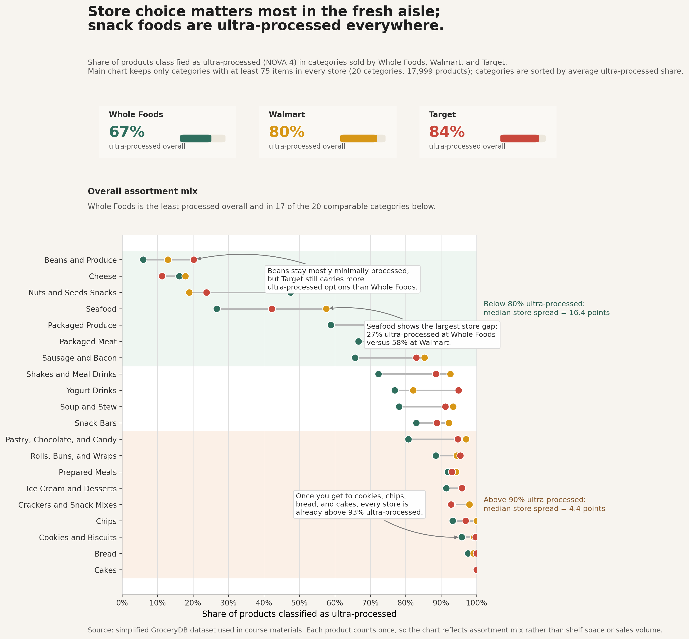

Store choice matters most in the fresh aisle; snack foods are ultra-processed everywhere.
An expository visualization built from the GroceryDB dataset comparing how Whole Foods, Walmart, and Target differ by food category and processing level.
Download the two-page submission PDF

Write-up
I wanted the chart to answer a simple question: does the store you shop at really change how processed your options are? The main pattern I found was that the answer is yes in some parts of the store, but not in others. Whole Foods does have a less processed assortment overall, but the biggest differences show up in categories like beans, seafood, packaged produce, and meat. Once you get into categories like cookies, chips, bread, and cakes, all three stores start to look very similar because almost everything is already ultra-processed.
To make the comparison fair, I turned the four-class NOVA-style prediction into one number per category: the share of items labeled ultra-processed (FPro_class = 3). I also filtered the main chart to categories with at least 75 items in Whole Foods, Walmart, and Target, so I was not comparing a large aisle in one store to a tiny sample in another. That left 20 categories and 17,999 products. I sorted the rows by average ultra-processed share, which creates a top-to-bottom progression from fresher categories to categories that are processed almost across the board.
My checkpoint version used a heatmap, but for the final I switched to a position-based chart because it is easier to compare percentages by location on a shared axis than by color intensity. Each row shows the three stores as colored dots, and the gray line between the outer points shows how far apart the stores are within that category. I kept the summary cards at the top to give quick overall context, then used the background shading and callouts to guide the reader to the main point. The side notes quantify that pattern: categories below 80% ultra-processed have a much larger typical store gap than categories already above 90%.
This chart focuses on assortment mix, so it leaves some things out on purpose. It does not show prices, nutrients, or brand-level differences, and it counts each product once instead of weighting by shelf space or sales. I also dropped my earlier price-per-calorie idea because it depended more heavily on missing values and outliers, and I thought it was easier to over-interpret. One category that does not cleanly fit the overall pattern is nuts and seeds, which is why I left it visible instead of smoothing it away.